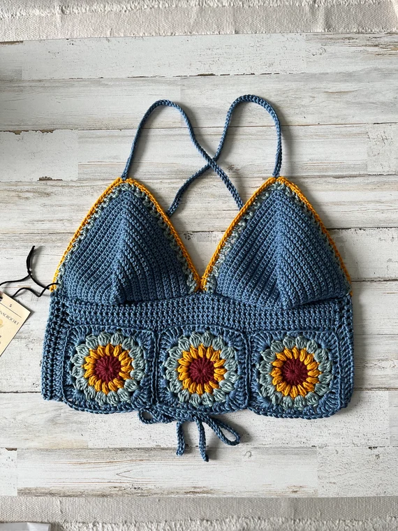

Bienvenido a Tejiendo Raíces
Moda artesanal hecha con amor, pasión y propósito.
Quiénes Somos
Tejiendo Raíces es un emprendimiento de tejidos a crochet que busca generar empleo para personas de bajos recursos en Cali, mientras conecta las tradiciones ancestrales con las tendencias actuales.
Productos

Top tejido a mano

Bolso artesanal

Sombrero de verano
Impacto Social
Apoyamos a mujeres tejedoras creando oportunidades de crecimiento económico y empoderamiento personal. Únete a nuestro Club de Tejedoras Raíces.
Contacto
¿Quieres saber más? Escríbenos a contacto@tejiendoraices.com.